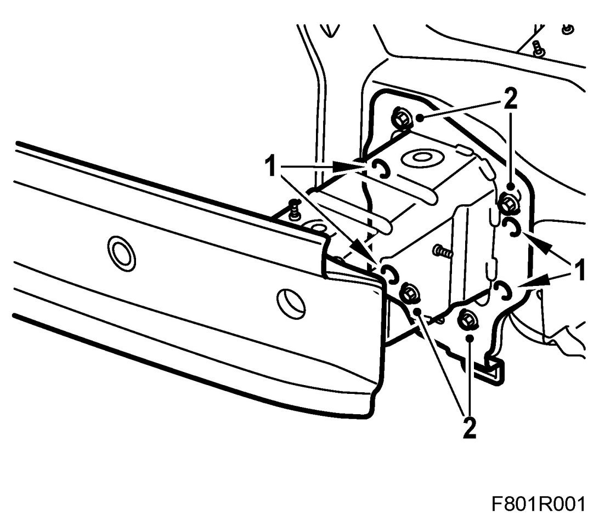
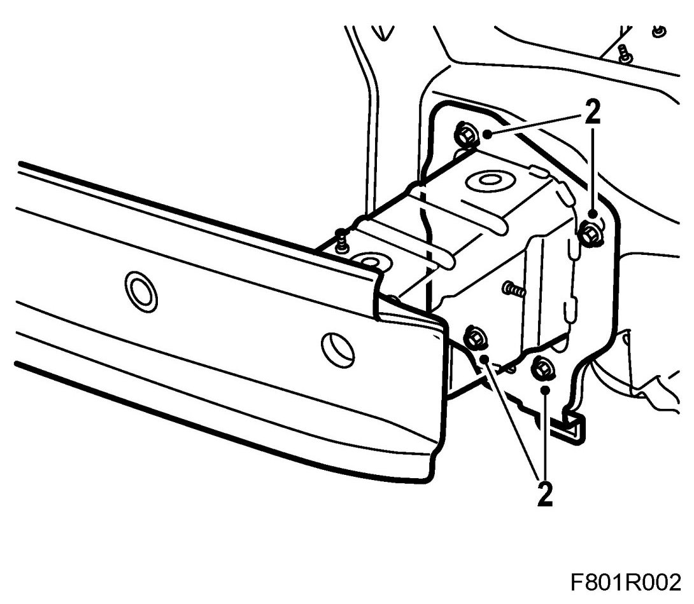

Front Bumper Reinforcement: Service and Repair
Bumper Member With Integrated Collision Box
To remove
IMPORTANT: Do not weld, drill or grind the bumper member. Follow the method below to ensure that impact safety is maintained.
1. Drill out the spot welds on both sides (4 per side).

2. Remove all bolts, 4 per side.
3. Tap loose the bumper member.
To fit
IMPORTANT: Do not weld, drill or grind the bumper member. Follow the method below to ensure that impact safety is maintained.
1. Apply anti-corrosion agent to the drilled surfaces.
2. Lift up the member and enter all bolts. It is not necessary to re-weld the frame to the collision box. For production only.

3. Tighten the bolts (4 per side).